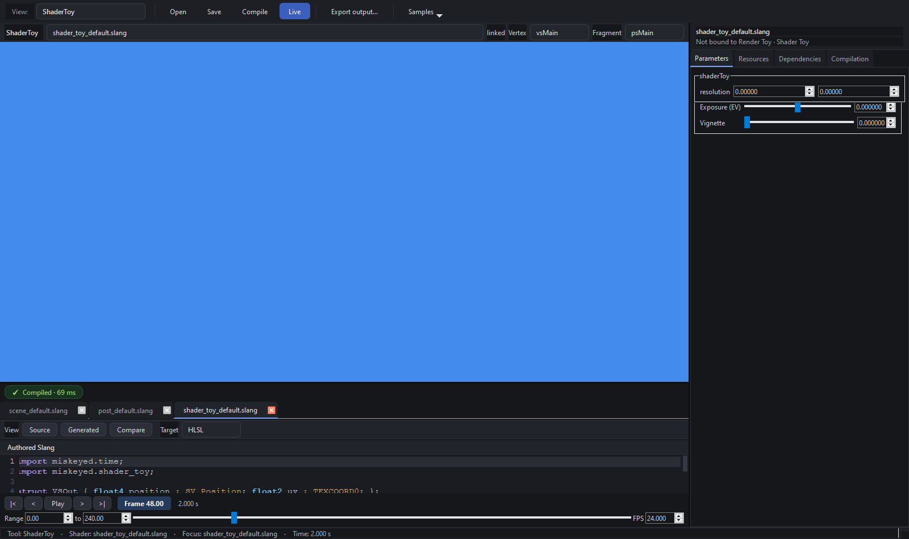

Shader Toy¶
Shader Toy is the smallest shipped live Slang loop: one bound document, a selected vertex/fragment pair, and direct fullscreen QRhi presentation without Render Toy’s scene pre-pass. It is intentionally not a feature-complete clone of the Shadertoy website.
Its importance is architectural. It reuses the shell’s ShaderWorkspace, focused
editor, Inspector, theme, and TimeContext while retaining an independent
ShaderToySession binding. This proves that a document shell can host coexisting
tool runtimes instead of making Render Toy the application owner.
See modes/shader_toy/ShaderToySession.* and shader_toy.slang.
